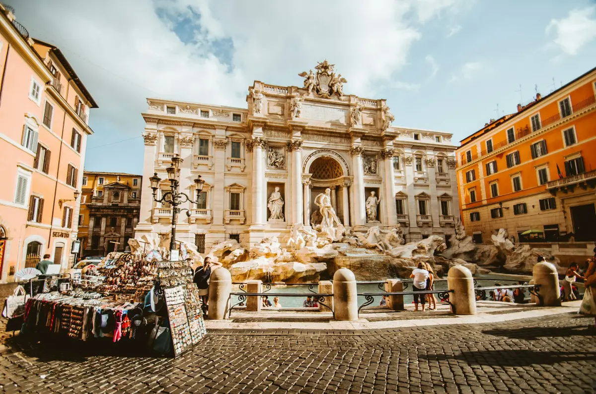
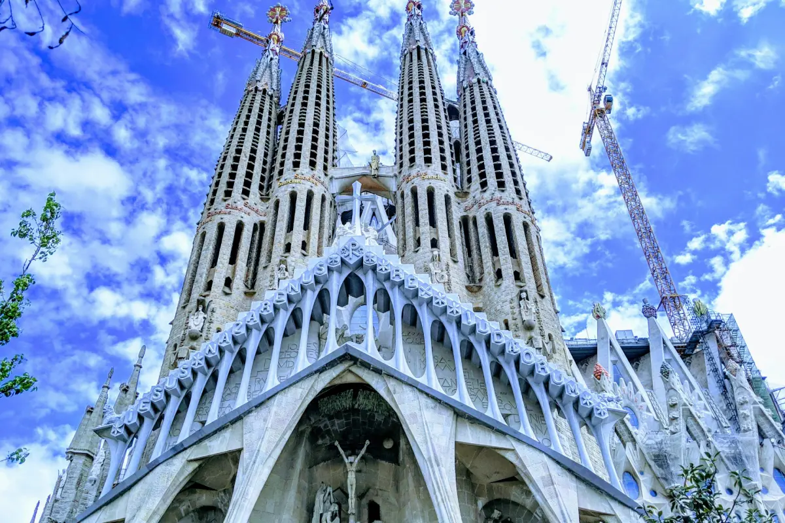
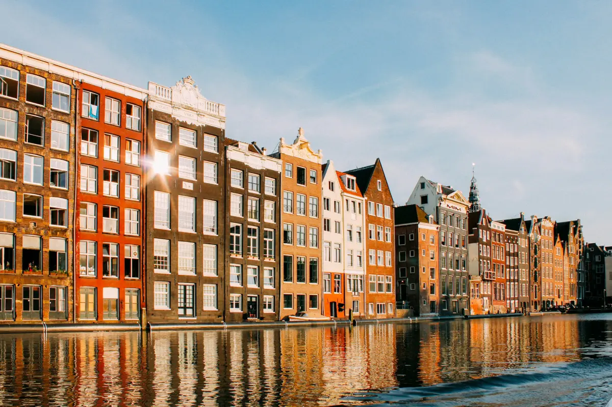

Paris, França
Termos como Cidade Luz, Terra dos Românticos e Cidade do Amor são constantemente atribuídos a Paris, e com toda razão. A capital francesa reúne o que há de melhor e mais belo em história, moda e gastronomia – oferecendo entretenimento para todos os gostos.
Roma, Itália

Viajar para Roma é como mergulhar em um livro e conferir de perto as histórias contadas nas salas de aula sobre os acontecimentos em terras italianas. A cidade eterna, repleta de marcos históricos e culturais, como o Coliseu e a Fontana Di Trevi, tem um fascínio próprio e gastronomia ímpar, referenciada no mundo inteiro.
Barcelona, Espanha

A cidade de Barcelona recebe a visita de pessoas de todos os cantos do planeta para conferir de perto suas belezas. Da vibrante cultura catalã às obras-primas arquitetônicas de Gaudí, da badalada vida noturna aos passeios pela natureza preservada e aos museus históricos, Barcelona é um baú de boas surpresas.
Amsterdã, Holanda

São muitas pontes, canais, moinhos de vento e paisagens de tirar o fôlego em uma das cidades mais charmosas da Europa. E é em Amsterdã que estão a histórica casa de Anne Frank e os museus conhecidos mundialmente, como Foam Van Gogh e Rijksmuseum.
Londres, Inglaterra
Londres faz parte tanto do imaginário infantil, como cenário da história de Harry Potter, quanto dos adultos, com os suspenses e mistérios de Sherlock Holmes. A capital da Inglaterra é repleta de arte e cultura, sendo a casa de quadros famosos de Da Vinci e Van Gogh, que ficam em galerias centenárias, e também dos grafites nas paredes em Shoreditch.